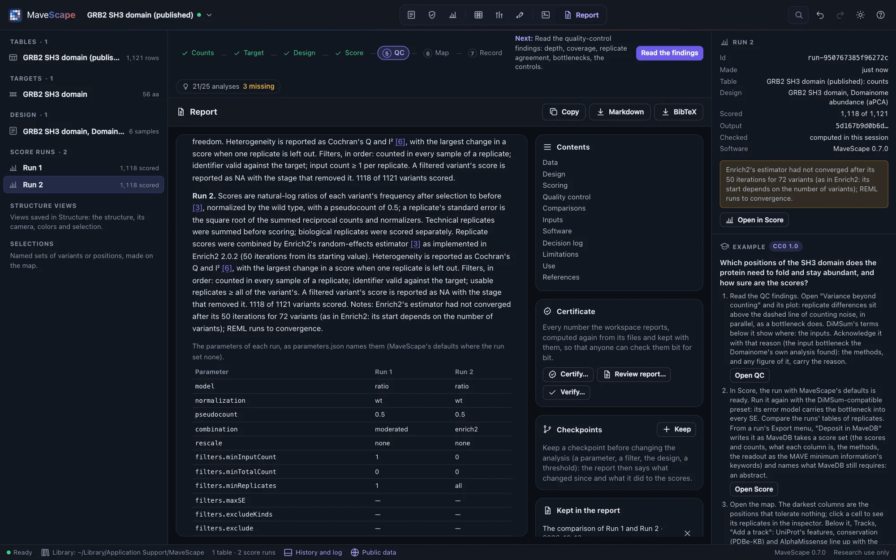
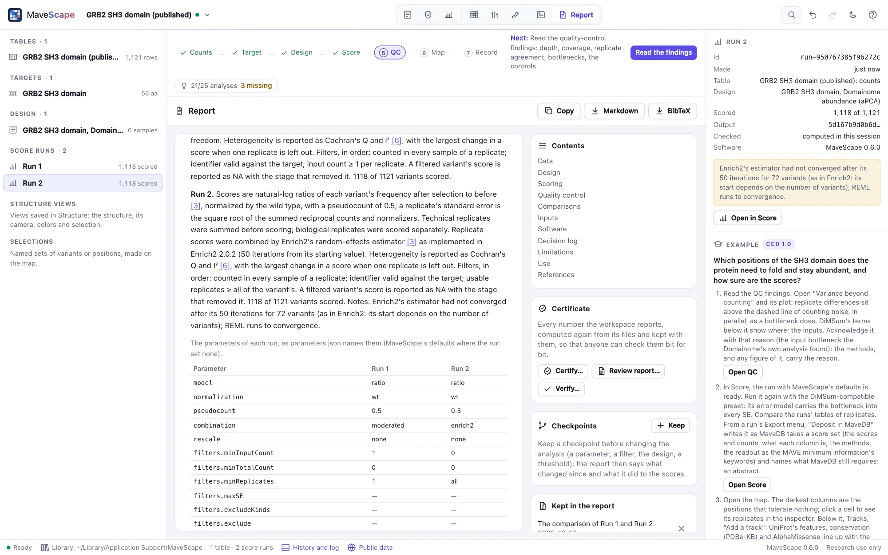
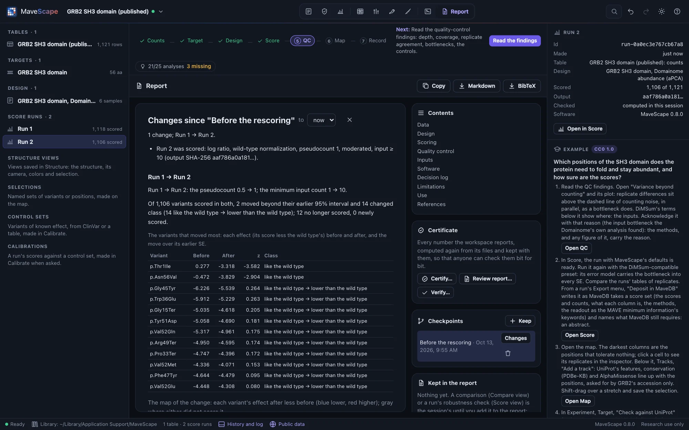
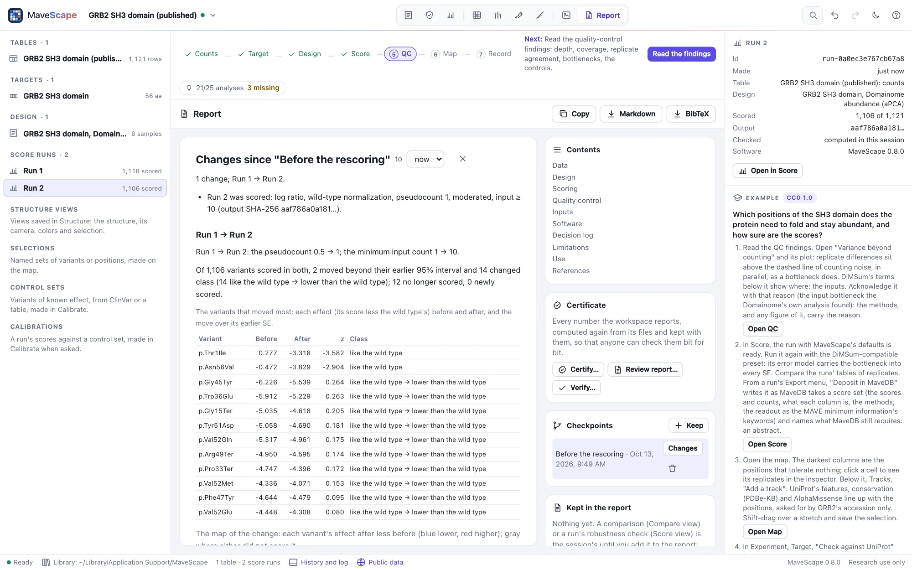

Report
The Report view writes the methods of the whole workspace from what it holds: what was done, with which inputs, and what to read with care. It says nothing the workspace did not do, and the same workspace gives the same text.
The report


The Report view holds the methods of the workspace, not only of a run. It is written again whenever the workspace changes, from the workspace's record alone: the runs and their recorded inputs, the QC findings as they stand, what was added to the report, the saved selections, annotations, structures and figures, and the history. Runs whose paragraphs read the same are named together ("Run 1 and Run 2.").
| Section | What it says |
|---|---|
| Data | Each run's table by its SHA-256, the variant identifiers and the target: where its sequence came from and its check against UniProt, as the run's own methods say them. Tables imported and not scored. |
| Design | Each run's design: its samples and replicates, what the assay measures, the controls. |
| Scoring | Each run's scoring with every parameter and filter, then a table of every run's parameters side by side, named as parameters.json names them. |
| Quality control | Each run's findings and the findings acknowledged, with their reasons; the thresholds changed from MaveScape's defaults. |
| Comparisons, Robustness | Each comparison and robustness check added to the report (below). |
| Selections | Each saved selection: its run, how many variants, and the query that made it. |
| Annotations, Structures | The tracks beside the map, with their sources and retrieval dates; the structures saved views show, each by its file's SHA-256, the target's mapping onto it and how the structure was read. |
| Figures | Each figure: its size and its panels by letter, with what each shows. |
| Inputs | Every file the analysis read, by its SHA-256. |
| Software | The MaveScape that wrote the report; each run's MaveScape, scoring version and output SHA-256, from which its scores can be recomputed and checked. |
| Decision log | The workspace's history, entry by entry with its time, and whether its chain of hashes holds. |
| Limitations | What the counts did not record and what that meant, what each run's model assumes, the QC findings not acknowledged, a predicted structure standing in for one. |
| Use | MaveScape reports experimental functional effects for research; it does not classify variants as pathogenic or benign. |
References are numbered in the order the text first cites them, each with its DOI, and only those the text cites are listed. A section the workspace has nothing for is left out: a workspace with one run and nothing else has no comparisons, selections or figures to speak of.
Adding a comparison or a robustness check
A comparison (the Compare view) and a run's robustness to analysis choices (the Score view) are the session's while you explore. Add to report, under a comparison's compatibility report or in a run's robustness pane, keeps what it found in the workspace, in its history: the comparison's sides, scale and filters, its compatibility report and statistics; the robustness check's choices, analyses and verdicts. The report then says it, with the methods cited (Lin's concordance, Bland and Altman's limits of agreement, a multiverse analysis), and the workspace archive carries it.
The runs they read never change, so what was kept stays true. Take one out with its × in the Report view; removing a run takes out the analyses that read it. Robustness checks made in the session and not yet kept are listed beside the report, to add.
Checkpoints, and what changed


A checkpoint keeps the analysis as it stands, named: the tables, targets, design, runs, QC thresholds and acknowledgements, selections, annotations, structure views, figures and what the report keeps. Keep one before you change the analysis, for a reviewer's question or a new parameter, with Keep in the Report view's Checkpoints, Keep a checkpoint in the drawer's history, or remote control's checkpoint. Checkpoints are kept with the workspace and in its archive; each records the history's hash at that moment, and its state's SHA-256.
Changes beside a checkpoint (or Changes since on its entry in the drawer's history) shows, above the report, what changed since, in words: the tables and targets, the design, the runs scored and removed, the QC thresholds and acknowledgements, the selections, annotations, structure views and figures, and what the report keeps. Compare with now, or choose another checkpoint.
For each table scored in both, the latest run of each is compared: how its parameters, filters and design changed, and what that did to each condition's variants. It counts those whose effect (the score less the wild type's) moved beyond the earlier run's 95% interval, those that changed class (lower than, like or higher than the wild type, q < 0.05, as the robustness check calls them), and those no longer scored or newly scored. It lists the variants that moved most and draws a map of the change, each variant's effect after less before. The QC findings whose verdict changed are said too: a threshold changed can move a finding without any run being scored again.
A change of units is not a change of effect. When the time scale, a time series' time points or the rescaling changed, the later run's effects are put in the earlier run's units before they are compared, and the diff says so: a score over a time course of 21 generations is 21 times the one per generation, and scored over the whole course instead, no variant has moved. Effects that cannot be put in one unit (replicates whose time courses now span different times) are not said to have moved; their classes still are.
Hsp90's example keeps a checkpoint before its time courses are cut to their first three samples, and the diff says what that choice moves (Examples).
Scripts compare two archives the same way (diff with two paths), their runs scored again from each archive's own tables.
Copying and exporting
- Copy puts the report on the clipboard as Markdown; Markdown and BibTeX download it and its references.
- The workspace archive carries the report as it was written (
report.md,report.bib), beside the latest run's methods. mavescape export --format report --out report/ workspace.mszwrites it without a window; scripts read it withreportand write it withexport(Remote control).
A run's own methods (Exports and the record) remain: they are its paragraphs in the report, word for word.
How the report is checked
The validation suite (Science) builds GRB2's workspace in Node, one operation at a time: the run, its target checked against UniProt, an Enrich2 rescoring, a QC threshold changed, a finding acknowledged, a selection by query, a comparison and a robustness check added to the report, UniProt's features beside the map, a saved view of 2VWF and a figure. Then:
- every operation has its sentence, and the decision log is the history, entry by entry;
- the example opened and scored alone says nothing more, and cites what its run's methods cite;
- each of the 14 examples' runs: the report's paragraphs are its methods word for word;
- every reference with a DOI (43) agrees with Crossref's record of it: title, journal, year, volume, issue, pages and first author (a recorded fixture; for three references Crossref records a field otherwise, and that field is left out, saying why);
- references numbered as the text first cites them, one BibTeX entry each, each with its own key;
- the same report again, from a copy and from the archive; a run removed takes the comparison that read it out.
The diff (the validation suite's diff): from a checkpoint of GRB2's run, five planted changes (the pseudocount, the minimum input count, a replicate left out of the design, a QC threshold, the readout) are each described exactly and nothing else; the variants each rescoring moved, crossed, filtered and scored equal a computation made apart from the scores and SEs; an analysis compared with itself has no change; a checkpoint through the archive gives the same changes.
In the window, through remote control: the report the archive carries, and the one the Report view shows after a comparison and a robustness check are added, are the same text as Node writes from the archive, each run's QC and scores recomputed; what was kept is what Node computes. mavescape export --format report writes the archive's report again, the same bytes twice. A checkpoint kept and the run scored again: the changes the window finds are those Node finds from the workspace's archive, and the same between two archives.